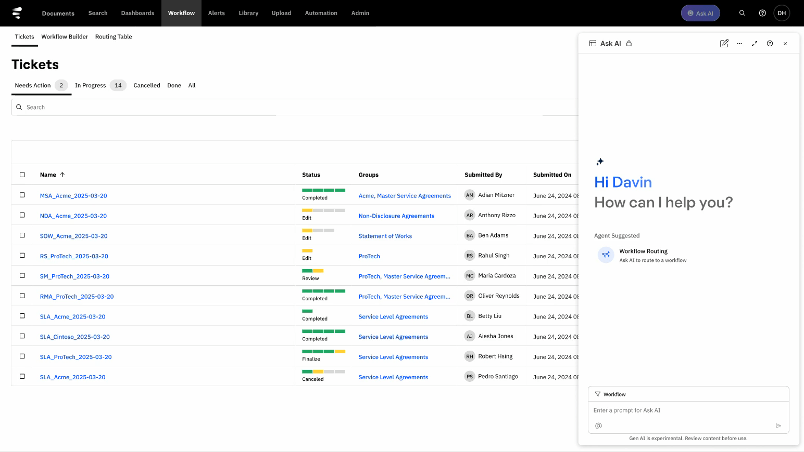
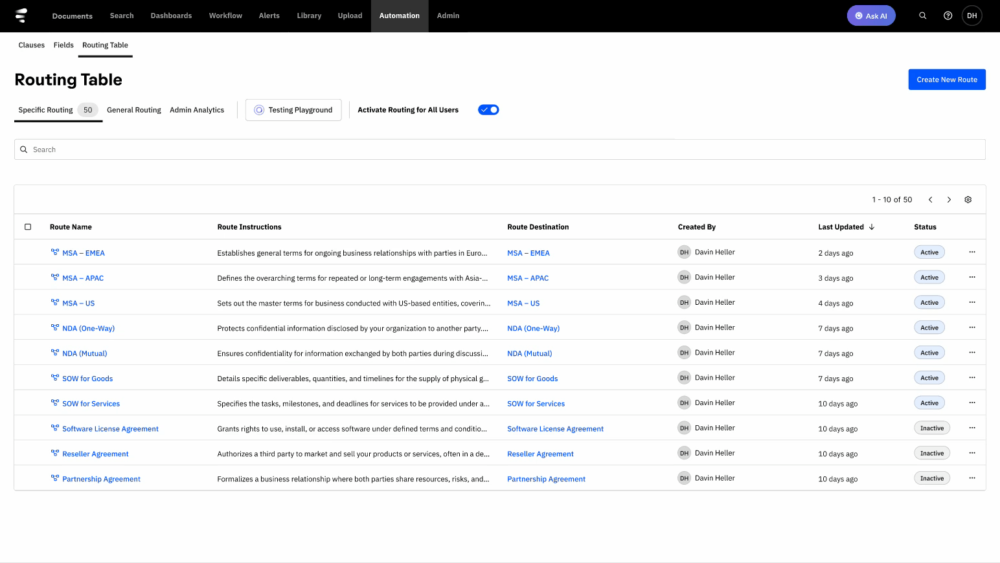
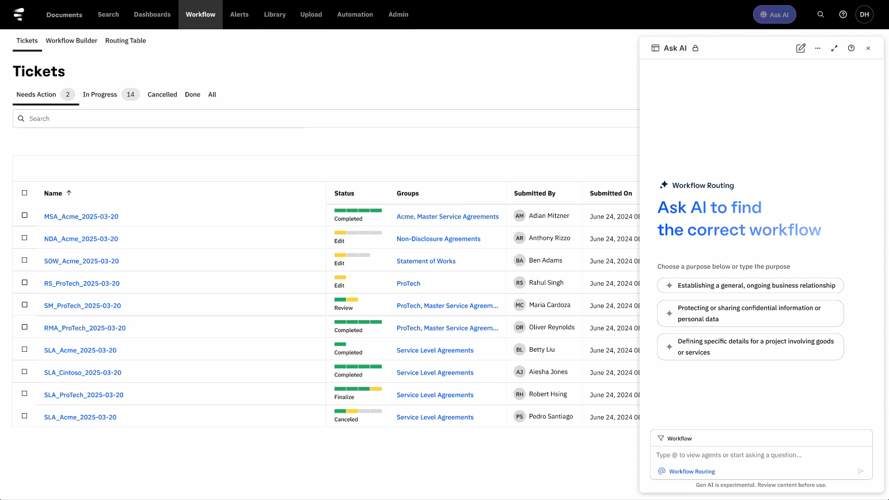

Workflow Routing Agent
Reducing ambiguity in legal intake through conversational routing

A centralized entry point routed legal requests through guided conversation instead of static intake paths.
Workflow Routing Agent gave business users one place to start when they needed legal help but did not know the right workflow.
The product reduced ambiguity by translating natural-language requests into the correct legal path through follow-up questions and guided routing.
The design challenge was to replace fragmented intake with a conversational system that was easier to use, easier to maintain, and easier to scale.
Scope
End-to-end product design across intake, routing, and admin configuration
Team
2 PMs, product leadership, engineering, and data science
Timeline
3 months from concept to launch-ready experience
Outcome
A centralized legal intake flow that reduced ambiguity and improved routing quality
Problem
Legal intake was fragmented, hard to navigate, and too dependent on users knowing internal legal terminology.
400+
Templates to navigate
Users had to choose from a large set of contract paths without enough guidance.
3000+
Manual requests managed
Intake still relied on spreadsheets, email, and ad hoc legal coordination.
1
Core ambiguity
Users often knew what they needed help with, but not which workflow to start.
Pain Point
Legal intake depended on users translating their own request into the right internal process
This created drop-off, delayed deal progress, and unnecessary legal triage.
Key Design Decisions
- Problem: users could describe their need, but not map it to the right legal workflow.
- Options: keep form-based intake, simplify the template list, or route through conversation.
- Final decision: natural-language intake with context-aware follow-up questions.
- Why: reduced ambiguity without requiring users to know legal categories in advance.
- Problem: requests were split across email, spreadsheets, and multiple product touchpoints.
- Options: improve existing entry points, add more workflow shortcuts, or create one centralized hub.
- Final decision: a single Ask AI entry point connected to routing logic and legal workflows.
- Why: improved discoverability, standardized intake, and created one scalable front door.
Interaction Deep Dive
Deep Dive
Conversation reduced ambiguity before the user entered a legal workflow
The interaction guided users who lacked domain knowledge, while keeping the routing logic understandable and lightweight.

Follow-up questions narrowed intent before assigning the request to a workflow.
How the System Works
Product Strategy & Implementation
Selected Screens
Solution 1
Ask AI became the centralized entry point for legal requests
Users no longer had to hunt for the right intake path before getting help.
A centralized hub gave users one place to start.
Solution 2
Conversational routing translated ambiguous requests into the right workflow
The system gathered just enough context to route accurately without overwhelming the user.
Conversation replaced template hunting with guided routing.
Solution 3
Configuration tools made the routing system maintainable for legal teams
Admins could manage routing rules, test paths, and monitor behavior without relying on engineering for every change.

Configuration turned routing into a productized system, not a one-off flow.
Impact
287%
increase in questions asked
Engagement signal
More users were willing to start legal intake when the interaction matched how they naturally asked for help.
30%
increase in unique users
Adoption
A centralized entry point lowered the barrier to using legal workflows across the organization.
3000+
requests shifted away from manual intake patterns
Operational leverage
The product moved legal intake toward a more standardized, scalable routing model.